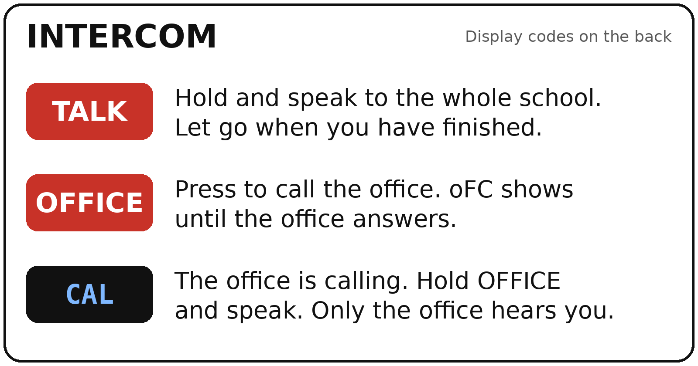
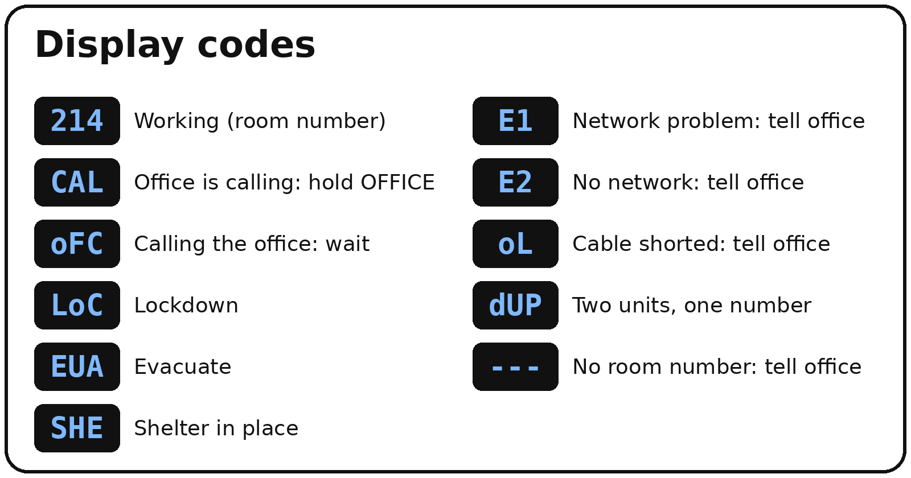

Print at 100 % (no "fit to page"). Each side is 80 x 42 mm. Cut both out and glue or laminate them back to back, up to 0.8 mm thick. The card slides into the holder on the front of the case from the top.

